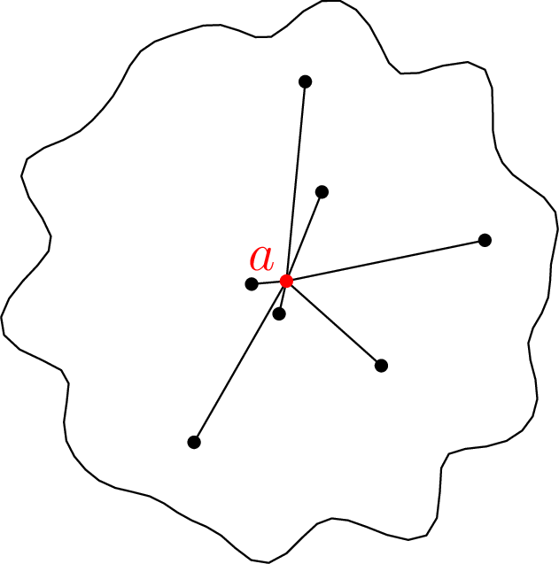
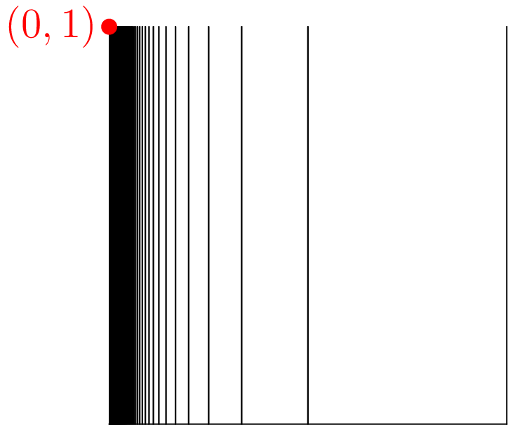

April 14th
Today I learned about path-connectedness, from Keith Conrad . We have the following definition.
Definition. We say that a space $X$ is path-connected if for any points $x,y\in X,$ there is a continuous function $p:[0,1]\to X$ with $p(0)=x$ and $p(1)=y.$
We remark that homotopy type theory takes its motivation for defining equality types from homotopies, which come from paths. For example, I am told that one can define equalities by actually exhibiting an interval type and making the above rigorous in type theory. I am not familiar with this.
We also remark with a nice image of path-connected components of space. Fix a point $a\in X,$ and then we can imagine all the paths emanating from $a$ as an endpoint to get the entire path-connected component.

Most of the time, path-connectedness and connectedness can be roughly thought of as the same thing. However, path-connectedness is in general stronger.
Proposition. Fix $X$ a path-connected space. Then $X$ is also connected.
The idea is that if we divide $X$ into separate components, then a path $p:[0,1]\to X$ connecting the components could be pulled back to divide $p$ into separate components, which is a problem because $[0,1]$ is connected.
Being disconnected is easier to deal with (topologically speaking), so we show the contrapositive: suppose $X=A\sqcup B$ is a disjoint union of open sets $A$ and $B,$ and we show that $X$ is not path-connected. Indeed, we hope there is no path $p:[0,1]\to X$ with $p(0)\in A$ and $p(1)\in B,$ which because $A$ and $B$ are nonempty will imply $X$ is not path-connected.
Continuing to avoid stubbornly avoid contradiction, suppose (without loss of generality) we have a path $p(0)\in A,$ and we want to show $p(1)\notin B.$ However, we see\[[0,1]=p^{-1}(X)=p^{-1}(A\sqcup B)=p^{-1}(A)\sqcup p^{-1}(B).\]This last union holds because $A\sqcup B$ covers the entire image, and $p^{-1}(A)\cap p^{-1}(B)=\emp$ because passing the intersection through $p$ would exhibit $A\cap B=\emp.$
Anyways, the point is that $p$ is continuous, so $p^{-1}(A)\sqcup p^{-1}(B)$ provides a disjoint open cover of $[0,1].$ But $[0,1]$ is connected, so one needs to completely cover $[0,1]$—explicitly, we note that\[p^{-1}(A)=[0,1]\setminus p^{-1}(B)\]is both open and closed, and it is also inhabited, so $p^{-1}(A)=[0,1].$ In particular, $p(1)\notin B,$ so we are done. $\blacksquare$
To get a feeling that path-connectedness is stronger than typical connectedness, we take the following lemma.
Lemma. Suppose $C\subseteq X$ is a connected subset. Then any $S\subseteq X$ with $C\subseteq S\subseteq\op{Cl}(C)$ is also connected.
Again, because disconnection is easier to talk about, we show the contrapositive: suppose $S$ is disconnected, we show $C$ is also disconnected. Well, $S$ disconnected lets us exhibit a disjoint nonempty cover $S\subseteq A\sqcup B$ with $S\cap A\ne\emp\ne S\cap B.$ But now $C\subseteq S,$ so\[C\subseteq A\sqcup B\]as well. And further, $S\subseteq\op{Cl}(C)$ only has limit points of $C,$ so $S\cap A\ne\emp$ requires $C\cap(S\cap A)=C\cap A\ne\emp.$ Similarly, $C\cap B\ne\emp,$ so we see that $A$ and $B$ witness $C$ being disconnected. $\blacksquare$
The above property is notably not true for all path-connected connected subsets, even in reasonable spaces like $\RR^2.$ The idea to exhibit a counterexample is to create a path-connected subset and then adjoin a limit point which is has no path to the rest of the subset. Keith Conrad use\[S:=\{(0,1)\}\cup[0,1]\times\{0\}\cup\bigcup_{n\in\ZZ^+}\{1/n\}\times[0,1].\]This looks the following.

We begin by showing that $S$ is indeed connected.
Lemma. The set $S$ is connected.
We show that\[C:=S\setminus\{(0,1)\}=[0,1]\times\{0\}\cup\bigcup_{n\in\ZZ^+}\{1/n\}\times[0,1]\]is path-connected, and then we will show $(0,1)$ is a limit point of $C.$ This will finish the proof because we will know that $C$ is connected (it's path-connected) and that $C\subseteq S\subseteq\op{Cl}(C),$ implying that $S$ is also connected.
To show $C$ is path-connected, we note that we already know $[0,1]\times\{0\}\cong[0,1]$ is path-connected (the homeomorphism is to ignore the constant $0$ coordinate), and because path-connectedness is an equivalence relation, it suffices to show that all elements of $C$ have a path to $[0,1]\times\{0\}.$ We do casework.
-
If we pick up $(x,0)\in[0,1]\times\{0\}\subseteq C,$ then the constant path provides a path from $(x,0)$ to a point in $[0,1]\times\{0\}.$
-
Else if we pick up $(1/n,y)\in\{1/n\}\times[0,1]$ for some fixed $n\in\ZZ^+,$ then we can come straight up from $[0,1]\times\{0\}$ by \[p(t)=(1/n,ty).\] We won't show this is continuous (its component functions are continuous, which a $\delta$-$\varepsilon$ proof could show), but we check that $p(0)=(1/n,0)\in[0,1]\times\{0\}$ and $p(1)=(1/n,y),$ which is what we needed.
It follows that $C$ is indeed path-connected.
It remains to show that $(0,1)$ is a limit point of $C.$ Well, let $U$ be any open neighborhood around $(0,1),$ and decomposing $U$ according to the ball basis of $\RR^2,$ we see $U$ contains some ball $B(p,r)$ containing $(0,1).$ We can refine this ball to\[B\big((0,1),r-d((0,1),p)\big)\subseteq B(p,r)\subseteq U.\]In particular, we can find some integer $n\in\ZZ^+$ with $1/n \lt r-d((0,1),p)$ (by finding one with $n \gt (r-d((0,1),p))^{-1}$). This means\[d((0,1),(1/n,1))=1/n \lt r-d((0,1),p),\]so indeed, $(1/n,1)$ provides an element of $U\cap C.$ Thus, every open neighborhood of $(0,1)$ contains a point of $C,$ so $(0,1)$ is a limit point of $C.$ This completes the proof. $\blacksquare$
It remains to show that $S$ is not path-connected. The above proof shows that "most'' of $S$—that is, $S\setminus\{(0,1)\}$—is actually path-connected, so we conclude that the $(0,1)$ must be the problem. This makes intuitive sense: $(0,1)$ is inherently separated from the rest of $S$ despite being arbitrarily close.
Lemma. The set $S$ is not path-connected.
As discussed, the problem is $(0,1)$; we claim that its path-connected component is $\{(0,1)\}$ alone. Indeed, fix a path $p:[0,1]\to S$ with $p(0)=(0,1),$ and we show that $p(1)=(0,1)$—in fact, we show $p([0,1])=\{(0,1)\}.$ The intuition is that if $p(t)=(0,1),$ then $p(t+\varepsilon)$ needs to be "close'' to $(0,1)$ by continuity, but $S\cap B((0,1),\delta)$ is disconnected for small $\delta,$ so there isn't a way for $p(t+\varepsilon)\ne(0,1).$
In particular, this "push a little further'' feels like the proof that $[0,1]$ is compact, so we imitate it, in its inefficient form. (One can make the following proof more efficient.) Let\[T=\big\{t\in[0,1]:p([0,t])=\{(0,1)\}\big\}.\]Now, $T$ has a least upper bound, say $t_0,$ such that $t \lt t_0$ implies $t\in T.$ Namely, $t\notin T$ implies $p([0,t])$ is outside $\{(0,1)\},$ so $t$ is an upper bound for $T,$ so $t\ge t_0.$
Further, we can show $p(t_0)=(0,1).$ Indeed, we know that $p^{-1}(\{(0,1)\})$ ought be closed because $p$ is continuous and $\{(0,1)\}$ is closed, and because $t \lt t_0$ implies $t\in T\subseteq p^{-1}(\{(0,1)\}),$ we conclude $t_0$ is a limit point of $p^{-1}(\{(0,1)\}).$ So we must have $t_0\in p^{-1}(\{(0,1)\}).$ We note that this effectively show $T$ is closed.
Now, the key claim is the pushing we claimed as intuition, which we will use to "push'' $t_0$ all the way up to $1.$ Forgetting the definition of $t_0$ for a moment, we show that if $t_0 \lt 1$ satisfies $t\le t_0$ implies $t\in T,$ then there is a $\delta \gt 0$ such that $t \lt t_0+\delta$ also implies $t\in T.$ We note that this effectively show $T$ is open.
Very quickly, we note that this claim is enough because it shows that our least upper bound $t_0$ cannot be less than $1$ lest it not actually be a least upper bound. So we have $t_0=1,$ which will finish the proof.
As promised, this follows from the fact $[0,1]\times\{0\}$ is the only connector of the vertical strips. Fix $\varepsilon\in(0,1)$ (say, $1/2$), and the continuity of $p$ gives us some $\delta$ such that\[|t-t_0| \lt \delta\implies d\big(p(t),p(t_0)\big) \lt \varepsilon.\]In particular, $p(t_0)=(0,1)$ and $\varepsilon \lt 1$ implies that $p(t)$ has nonzero $y$-coordinate in this region. Thus, $p$ has image in\[S':=\{(0,1)\}\cup\bigcup_{n\in\ZZ^+}\{1/n\}\times(0,1],\]which is horribly disconnected.
In particular, we claim that $\{(0,1)\}$ is its own connected component. Indeed, fix any $x_0\in(0,1],$ and we show that\[\{(x,y)\in S:x \lt x_0\}\]is disconnected. Indeed, let $n \gt 1/x_0$ so that $1/n \lt x_0$ be a positive integer, and then no element of $S$ has $x$-coordinate equal to $x'=\frac12\left(\frac1n+\frac1{n+1}\right).$ In particular, we may safely divide $\{(x,y)\in S:x \lt x_0\}$ into the open sets\[\{(x,y)\in S:x \lt x'\}\sqcup\{(x,y)\in S:x' \lt x \lt x_0\}.\]These are nonempty because the former contains $(0,1),$ and the latter contains $(1/n,1),$ so indeed $S'$ is disconnected. However, the connected component of $\{(0,1)\}$ is the smallest connected set containing $(0,1),$ and taking the arbitrary intersection over $x_0\in(0,1]$ forces us to conclude $\{(0,1)\}$ is the connected component.
Now, the image of $p([0,t+\varepsilon))\subseteq S'$ is path-connected and therefore connected, so $p$ cannot go outside of $\{(0,1)\}$ because this is the largest set containing $(0,1)$ which is connected. This completes the proof. $\blacksquare$
With this, we conclude that path-connectedness is indeed stronger than connectedness.
Theorem. There are sets which are connected but not path-connected.
The set $S$ defined above does the trick. $\blacksquare$